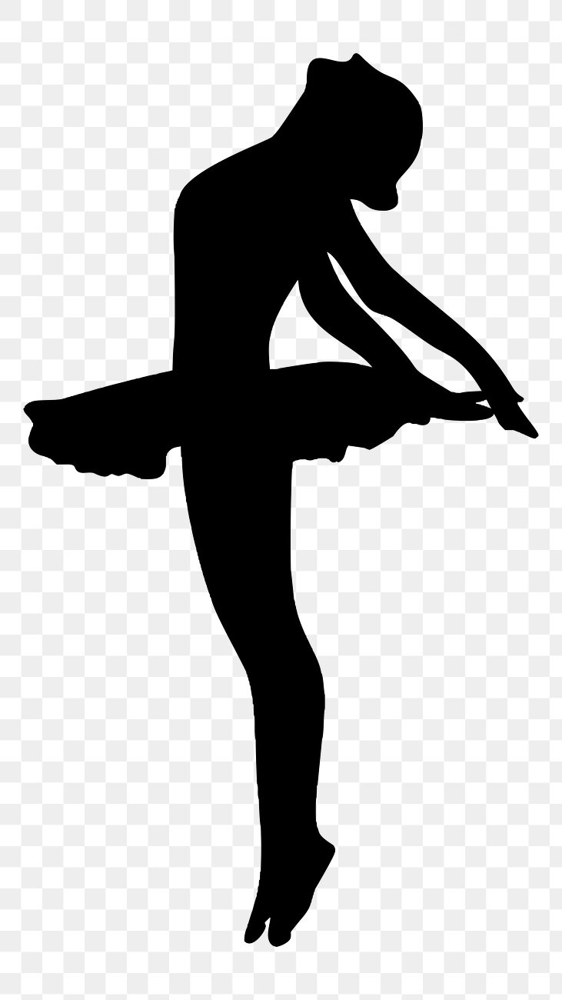
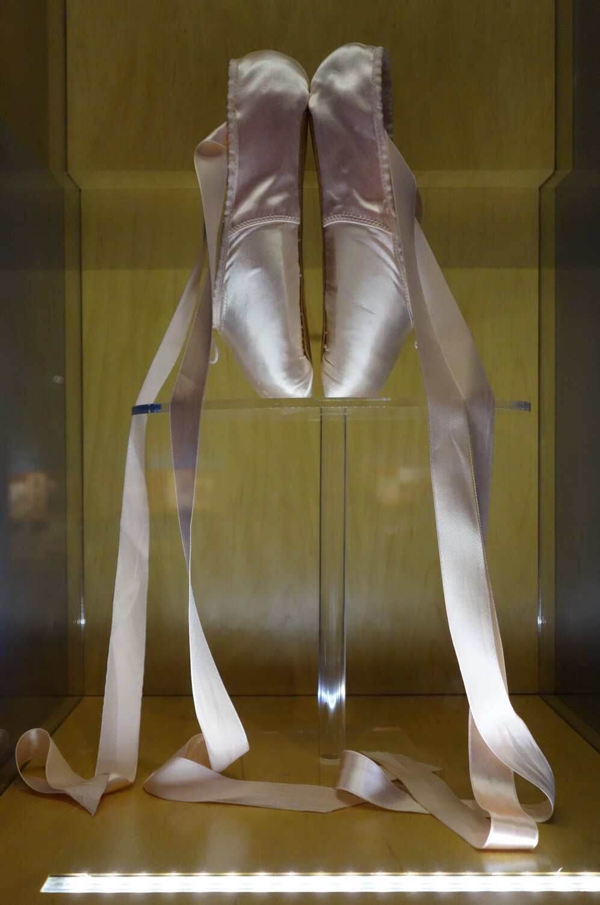
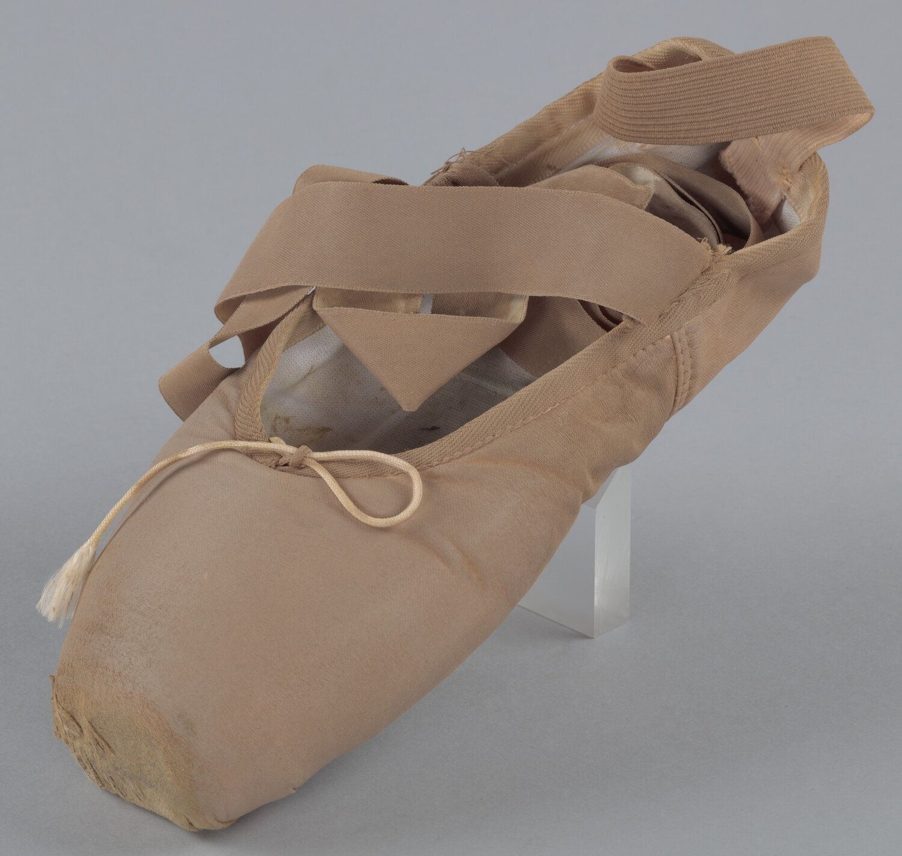
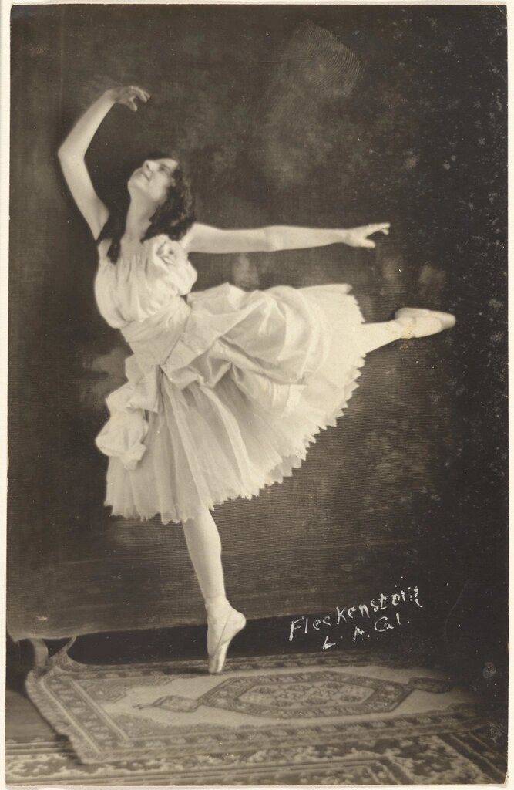
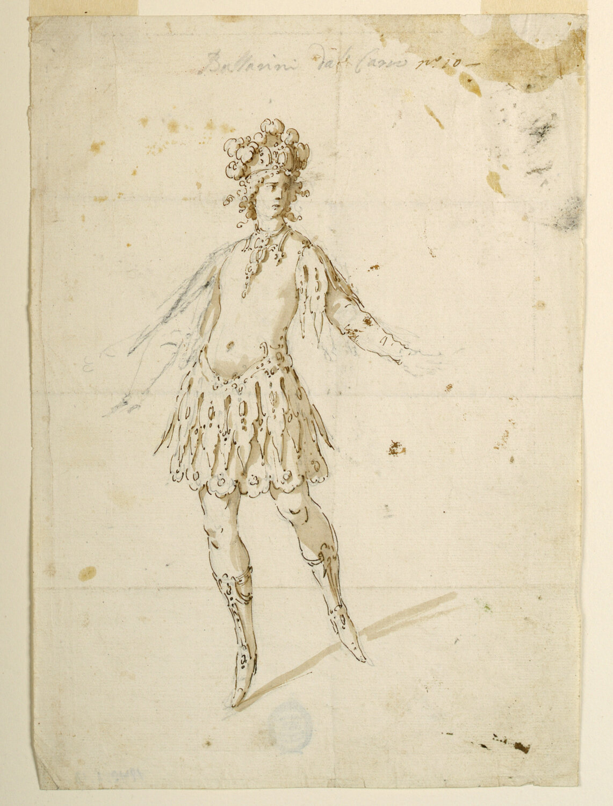
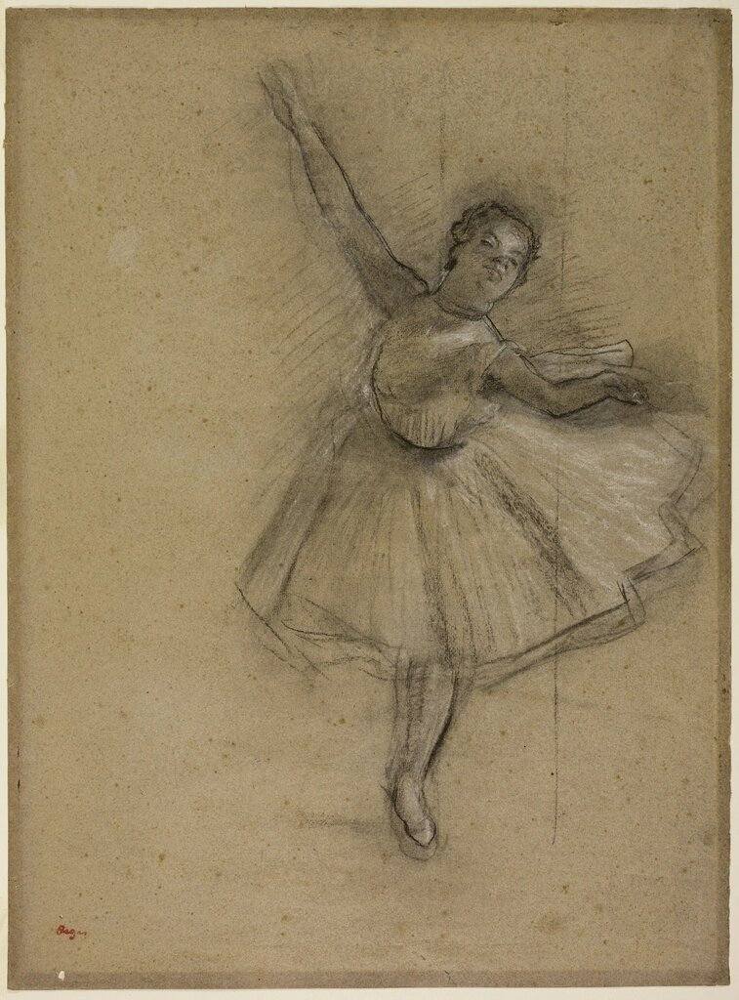
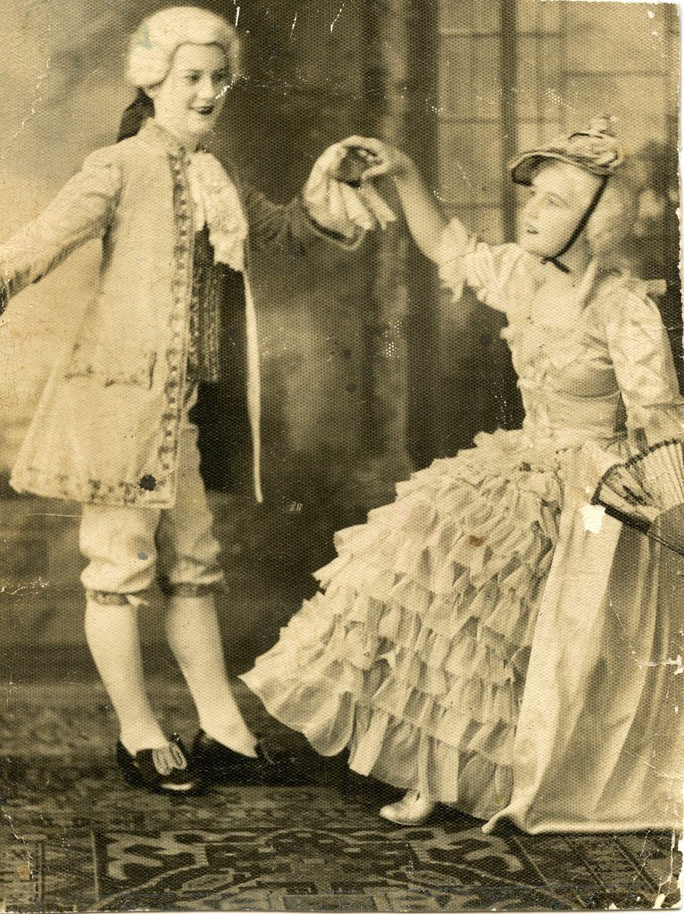

Sauté · saltar
Todo lo que despega del suelo. El cuerpo abandona la tierra un instante y vuelve sin ruido, amortiguado por un plié que lo recibe.
Cada gesto del ballet tiene un nombre, y casi todos esos nombres son franceses.



Cuando la danza se codificó —primero en la corte, después en la academia francesa—, sus pasos recibieron nombre. El término no es un adorno: describe la mecánica exacta del cuerpo.
Todo empieza por los pies. Cinco posiciones ordenan el cuerpo antes de cualquier movimiento.
Ese vocabulario viaja sin traducción: una clase en Tokio o en São Paulo usa las mismas palabras. El idioma se volvió notación, una partitura hablada del movimiento.
En ballet, la palabra precede al cuerpo: se nombra el gesto y el cuerpo obedece. Aprenderlo es, en parte, aprender a leer un mapa de palabras sobre uno mismo.
Todo lo que despega del suelo. El cuerpo abandona la tierra un instante y vuelve sin ruido, amortiguado por un plié que lo recibe.
Las rotaciones, del giro entero al cuarto de vuelta. La cabeza se demora y luego alcanza al cuerpo: el secreto contra el vértigo.
El pie no se levanta: roza el suelo y lo recorre. El movimiento dibuja una línea continua antes de cerrarse en una posición.
La extensión que alarga la línea hasta su límite. Cada articulación se despliega como si la palabra empujara el hueso un milímetro más.
Antes del centro de la sala está la barra: un apoyo de madera donde la clase repite, cada día y en el mismo orden, el mismo abecedario de pasos. La repetición no es monotonía; es la forma en que el vocabulario se deposita en el músculo hasta que deja de necesitar la palabra.




Casi todo en la academia ocurre en dehors: las piernas rotan desde la cadera para abrir el cuerpo hacia el público. No es un capricho estético; abre el ángulo de las articulaciones y multiplica las direcciones posibles del gesto. Lo contrario, en dedans, recoge el movimiento hacia el centro.
El cuerpo no ilustra la música: la escribe en el aire.
La música no es el fondo del ballet: es su esqueleto invisible. El cuerpo danza dentro de la partitura como el agua dentro de un cauce; cada compás delimita la forma que el gesto puede tomar y cada acento señala dónde el movimiento debe estallar o detenerse.
Escuchar una pieza de ballet sin ver el escenario es leer la mitad de un texto. La otra mitad la escribe el intérprete que traduce el tiempo musical en distancia recorrida, en peso del cuerpo, en la duración exacta de un equilibrio que dura lo que dura una nota.
La velocidad a la que transcurre el tiempo musical. Un adagio exige sostener cada posición hasta su límite; un allegro comprime el gesto en una fracción de segundo y exige que la forma no se pierda en la rapidez.
El modo en que el músico —y el bailarín— agrupa las notas en unidades con inicio y final propios. El cuerpo no responde nota a nota sino frase a frase, como si respirara con la melodía.
Los cambios de intensidad, del pianissimo al fortissimo. El bailarín los traduce en peso: un mouvement doux pide un brazo casi sin masa; un accent fort pide que la energía llegue desde el centro del cuerpo.
El compás en que la música calla es también movimiento. El cuerpo que se detiene en silencio sostiene la tensión; la pausa habla tanto como el paso que la precede o el que viene después.
El escenario de ballet no es solo el área visible: es un sistema de espacios que trabajan en paralelo. Lo que el público ve es el resultado final de una arquitectura pensada para que la ilusión exista sin fisuras, para que la magia no tenga bordes.
El vestuario en ballet no decora: prolonga la línea del cuerpo o la delimita. Cada prenda tiene una función técnica que es inseparable de su función expresiva; el diseño nace de la necesidad del movimiento y luego la trasciende para convertirse en imagen.
Coser un traje de ballet es también coreografiar: la tela debe acompañar el peso, ceder con el salto, resistir el giro. Lo que se ve desde la sala es el resultado de cálculos invisibles sobre la tensión, la ligereza y el vuelo.
La falda estructurada de tul que rodea la cadera. El tutú romántico cae en capas suaves hasta la pantorrilla; el tutú clásico se extiende horizontalmente y deja las piernas completamente visibles, amplificando cada posición de las cinco.
Calzado de suela rígida y puntera endurecida que permite elevarse sobre los dedos del pie. No llegan terminadas: el bailarín las rompe, las cose y las adapta al contorno exacto de su propio pie antes de la primera función.
La malla ajustada de lycra o jersey que cubre el torso. Permite ver la musculatura y la alineación con claridad; para el maestro es también un instrumento de diagnóstico: la postura se revela sin pliegues que la oculten.
El soporte estructural dentro de ciertos trajes de función que sostiene la espalda y moldea el tronco. A diferencia del corsé histórico, el de ballet está diseñado para permitir la respiración completa y no restringir el rango de movimiento.
El ballet se aprende en capas. Primero la postura, luego el peso, después la coordinación, más tarde la musicalidad. Lo que parece un gesto único en el escenario es el sedimento de años en que ese gesto fue descompuesto en partes, corregido, repetido y vuelto a repetir hasta que el cuerpo lo encontró solo.
El tiempo que el cuerpo mide con sus pasos es el único que no pasa: queda suspendido en el aire, exacto, entre un impulso y su caída.